Main Editor Sections
The default World Editor view consists of five main sections:
File Menu - Found at the very top of the World Editor window, you will
find menus that controls the global functionality of the editor,
such as opening/saving levels, toggling camera modes, opening settings
dialogs, and so on.
Tools Bar - Located just below the File Menu, this bar contains
shortcuts to all of the tools, their settings, and some options found
in the File Menu.
Tool Palette - The Tool Palette changes based on what Tool you
are currently using. For example, when using the Object Editor you
will have icons for moving and rotating an object, wheras the Terrain
will have icons for moving and rotating an object, whereas the Terrain
Editor display icons for
elevation tools.
Scene Tree Panel - While using the Object Editor, one of the
floating panels available to you is the Scene Tree. It is composed of
two tabs: Scene and Library. The Scene tab contains a list of objects
currently in your level. The Library tab is what you will use to
add new objects to your level after which they will appear in the Scene tab.
Inspector Panel - While using the Object Editor, a selected
object's properties will be shown in this panel. Most of your object
editing will be performed here.
(Hover over different sections to get description)
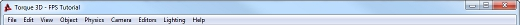File Menu: Found at the very top, this is where you will find various menus that controls global functionality of the editor, such as opening/saving levels, toggling camera modes, opening settings dialogs, and so on.', WIDTH, 400)" onmouseout="UnTip()" >
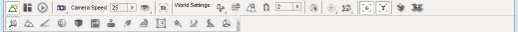Tools Bar: Located just below the File Menu, this bar contains shortcuts to all of the tools, their settings, and some options found in the File Menu.', WIDTH, 400)" onmouseout="UnTip()" >
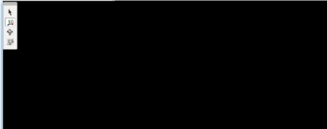Scene View and Tool Palette: Main scene view of your level and its objects. In the upper left you can see the Tool Pallete, which changes based on what Tool you are currently using.', WIDTH, 400)" onmouseout="UnTip()" >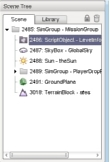Scene Tree Panel: While using the Object Editor, one of the floating panels available to you is the Scene Tree. It is composed of two tabs: Scene and Library. The Scene tab contains a list of objects currently in your level. You can select specific objects to modify them. The Library tab is what you will use to create new objects and add them to your level.', WIDTH, 400)" onmouseout="UnTip()" >
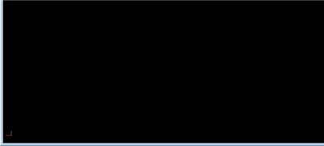Scene View and Tool Palette: Main scene view of your level and its objects. In the upper left you can see the Tool Pallete, which changes based on what Tool you are currently using.', WIDTH, 400)" onmouseout="UnTip()" >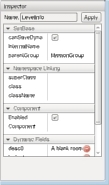Inspector Panel: While using the Object Editor, the properties of a selected object will be shown in this panel. Most of your object editing will be performed here. .', WIDTH, 400)" onmouseout="UnTip()" >
File Menu
| Menu |
Description |
| 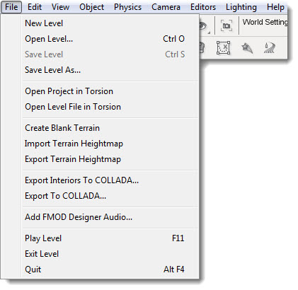 |
File Menu allows you to:
Create, save, open, and close levels;
Open, import, and export level data to/from other tools;
Run your level to test it and exit the World Editor. |
| 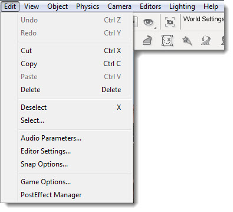 |
The Edit Menu allows you to:
Control editor actions such as undo and redo;
Cut, copy, paste, and delete objects you have selected;
Select objects using a name pattern or by type filtering;
And
Access dialogs to control various World Editor settings.
|
| 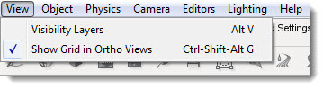 |
The View Menu:
Opens the Visibility Layers dialog which toggles debug rendering modes;
And
Toggle the visibility of other aspects of the editor.
|
| 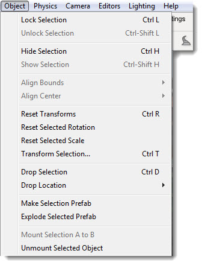 |
The Object Menu allows you to:
Manipulate a selected object's settings by locking/unlocking it, hiding/showing the object, resetting its transforms, and so on.
|
 |
The Drop Location sub-menu selection informs the World Editor where it should place newly created objects. |
| 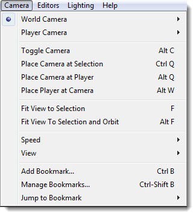 |
The Camera Menu allows you to choose your camera type, adjust its speed and motion, and drop it at certain locations. |
| 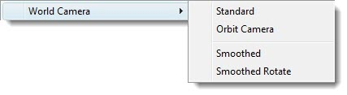 |
The World Camera sub-menu allows you to change the way the camera moves. |
| 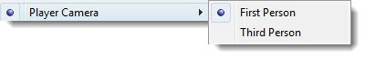 |
The Player Camera sub-menu allows you to switch between perspectives while moving around as a player. |
| 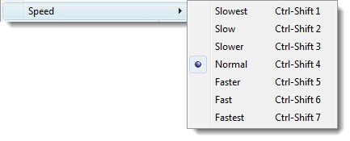 |
The Camera Speed sub-menu allows you to adjust how fast the camera moves. |
| 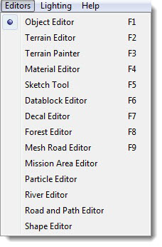 |
The Editors Menu allows you to select which set of editing tools is currently active in the World Editor. |
| 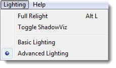 |
The Lighting Menu allows you to switch between Advanced and Basic lighting modes, as well as perform level relights. |
| 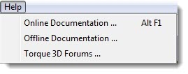 |
Contains shortcuts to documentation and forums for Torque 3D. |
Tools Bar
The Tools Bar is the best way to switch between tools. It is made of two components: Tool Settings (top bar) and Tools Selector (bottom bar).
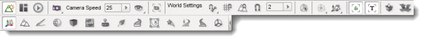
Tool Settings is made of up three sub-sections: the editor selector, camera settings, and Object Editor. The editor selector and camera setting will always be displayed. The Object Editor will display available settings for the currently selected tool. The Tools Selector will always display the same shortcuts for selecting tools.
This section focuses on the elements of Tool Settings.
The first three icons switch between the editor's operating modes. Each icon represents a different editing mode and only one mode can be active at any time. There are three modes: World Editor, GUI Editor, and Game Mode. The World Editor is represented by the mountain icon. The GUI Editor is represented by the boxes icon. The Game Mode is represented by the arrow icon.
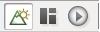
World Editor mode provides tools for manipulating the "world" of your game including terrain, creatures, and so on.
GUI Editor mode provides tools for manipulating the Graphical User Interface (GUI) of your game such as health meters, cursors, and so on.
Play Game Mode runs your game and lets you play through it. NOTE: When you use this icon to play your game the World Editor actually closes completely. To return to the World Editor you must press F11 or exit the game and relaunch the World Editor from the Toolbox.
Next to the editor selector, you will find the camera and visibility settings.
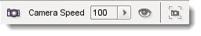
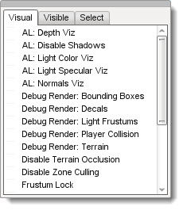
The camera icon will let you choose your camera type. The drop-down menu next to it will let you switch between camera speeds. The eye icon is the visualization settings which toggle debug rendering modes for various graphical modules, such as normal mapping, wireframe, specular shading, etc. The icon that looks like a camera in a box will move your camera to whatever object you have selected, filling up your view with its boundaries.
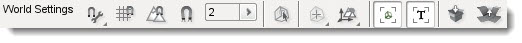
The World Settings make up the rest of this bar when using the tools. The first icon lets you determine your snapping options (snapping to terrain, a bounding box of an object, which axis, etc.). The next icon toggles snapping to a grid. The magnet icon determines soft snapping to other objects. The numeric indicator determines the distance of the snap option.
The box icon with an arrow is a selection tool that allows you to select an object according to its bounding box. This makes selecting small, detailed objects much easier. The next icon that looks like a bullseye will change the selection target from the object center to the bounding box center. The small icon with arrows and mountains will change the object transform and the world transform.
The next two icons show descriptors in your scene. The first icon that looks like a box in a square will display object icons for the various objects in your scene. The second icon will show text descriptors for the objects in your scene.
The last two icons in the bar are prefab icons. The first icon lets you group selected items into a "prefab" (or prefabricated collection) of objects. The second icon will ungroup your prefab items.
Tool Selector and Palette
The following images are labeled with the tool name, and a brief
description which you can get by hovering over the image. The specifics
of each tool will be detailed in their own sections.
Object Editor
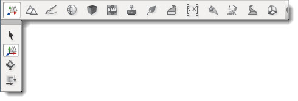
Terrain Editor
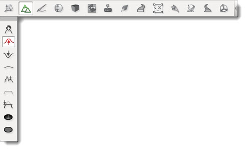
Terrain Painter
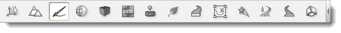
Material Editor
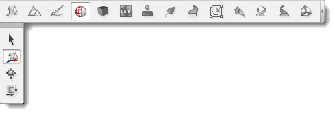
Sketch Tool
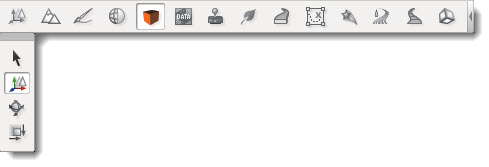
Datablock Editor
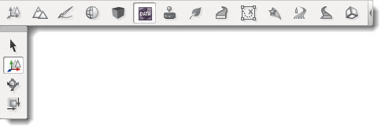
Decal Editor
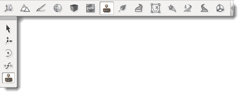
Forest Editor
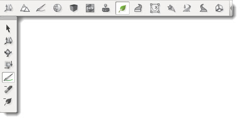
Mesh Road Tool
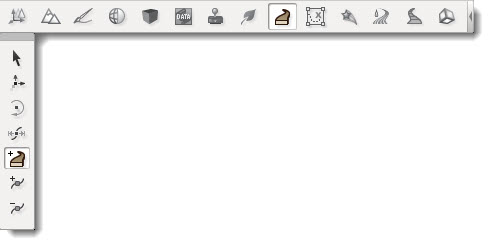
Particle Editor
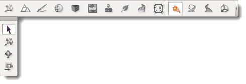
River Tool
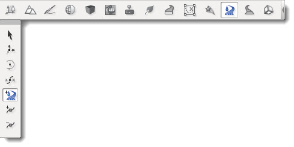
Decal Road Tool
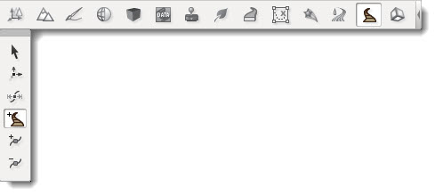
Shape Editor
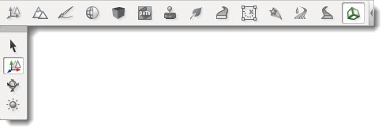
Scene Tree
The Scene Tree panel is available while using the Object Editor tool. It is composed of two tabs: Scene and Library. The Scene tab contains a list of objects currently in your level. You can select specific objects to modify them.
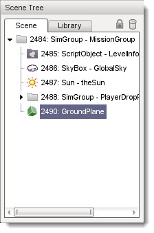
Each object in the tree has an icon, unique ID, an object type, and a name. Whenever you click on an object in the tree, it is selected in the level and vice versa. Most of your objects can stand alone in the tree, but you can also use a SimGroup object to organize related entries.
At first glance, a SimGroup looks like a folder and acts much like one to help organize your tree. It does not physically exist in your level, but you can reference it by name or ID from script or the engine. This is handy for grouping several game objects you might need to iterate through and invoke an action on. Even if you do not use that feature, it is still a good idea to group similar objects under a SimGroup to help organize and better navigate your trees as some levels can grow to a large number of objects.
Library Tab
The Library tab is what you will use to add objects to your level. Once an object has been added to your level, it will appear in the Scene tab (described above). There are four sub-categories on the Library tab, which are separated as sub-tabs: Scripted, Meshes, Level, and Prefabs. Each category contains objects that serve very specific purposes.
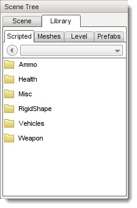
Scripted Tab
The first tab, Scripted, is automatically populated with game objects that have been created via script. For example, let's say you have a ceiling fan object with an associated script which controls how and when the fan blades rotate. It would appear in the Scripted tab as follows:
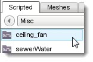
A discussion of scripting and how to associate scripts with an object is beyond the scope of this document. See the TorqueScript Tutorial for more information.
Meshes Tab
When you simply wish to add a 3D art asset, you will use the Meshes Tab. You can browse the various folders containing assets in your project's "art" directory. From here you can add DTS, COLLADA, and DIF files.

Level Tab
The Level Tab lists all the Torque 3D objects that can be used to populate your level. Objects are further divided into category folders. To view what is in a folder, double click it. To leave a folder and view the folder list, click the left pointing arrow icon. To move directly to another folder, select it from the drop down list.
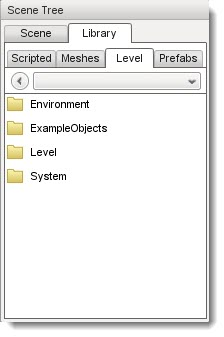
Each sub-category contains objects with similar themes:
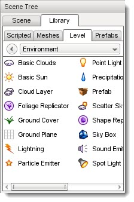
The Environment sub-category contains most of the objects you will add to your level, such as Terrain, Sun, Clouds, Waterblocks, and similar objects.
The ExampleObjects sub-category contains example rendering classes created in C++.
The Level sub-category contains objects that manage Time of Day, level boundaries, and similar objects.
The System sub-category contains engine-level objects such as SimGroups.
Prefabs Tab
The prefab system allows you to group multiple objects together and combine them into a single file. This new object can then be repeatedly placed into your level as a whole, making it easier for you to add complex groups of objects with only a few mouse clicks. When you create a prefab from multiple selections, you will save it to a *.prefab file
using the group prefab icon. The World Editor will automatically load these files in the Prefabs tab.
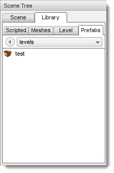
Inspector
Whenever you add an object to a level, you will most likely start modifying them immediately. You can use the Inspector Panel to change the properties of an object.
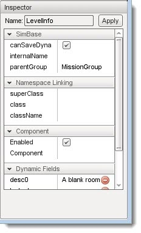
While there are a few shared property sections, most object types will have a unique set of properties. Editing is as simple as selecting an object in the level, locating a field that you want to change, such as "className" or "media", then either editing the existing value or entering a value if no default value is given. There are different types of values such as strings, numbers, check boxes, vectors, and even values that require the use of a file browser or color picker.
Dialogs
The World Editor contains three dialogs specific to the editor itself. The rest of the dialogs are typically tool or object specific, and will be described in their own sections. The first we will discuss is the Options dialog, which is used to change your current session's audio and video properties as well as mouse and keyboard control bindings. The Options dialog is accessed from the main menu by selecting Edit > Game Options…
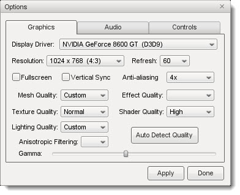
You will use the Graphics tab to adjust your game resolution, screen mode, detail levels, and so on. The Audio tab allows you to adjust your current game's volume, both globally and channel specific.
The second dialog, which is very important to editing, is the World Editor Settings pop-up.
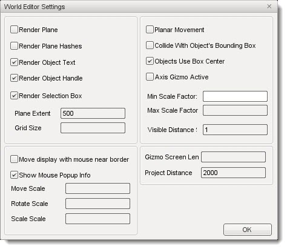
Through this dialog, you can change various aspects of how your tools
render and function. The top left section will control what is rendered
on your object, such as its text (name/ID), handle, and selection box.
You can also adjust the rendering of the editing plane in relation to
the object.
The bottom left section contains the control settings for
your manipulators (Translate, Rotate, and Scale tools). You can tweak
the sensitivity of the manipulators for more precise or dramatic
modifications.
Both sections on the right have settings that adjust
visibility and selection methods for your gizmos. The Visible Distance
is also an important value, as that adjusts how far into the distance
you can see while editing the level.
The final dialog is the PostFX Manager GUI which allows level editors
to control various post-processing effects.
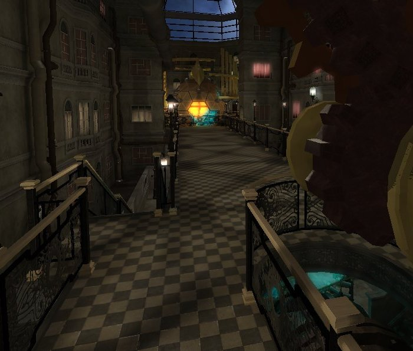
The Enable PostFX checkbox and top row of tabs in the image below
are interactive; select one of the effect tabs to view details and an
in-game example of the effect, and use the checkbox to toggle the current
effect on and off.
| 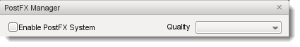 | |
 | |
| 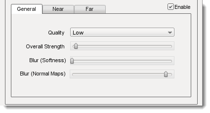 |
Screen space ambient occlusion (SSAO) is an approximation of true Ambient Occlusion. Enabling the effect will darken creases and surfaces that are close together.
Outdoor areas with brighter ambient light will show the effect better, but it can be seen on the shading on the railing in the bottom right of the screenshot.
- Quality
- Controls the number of ambient occlusion samples taken; higher quality is more expensive to compute.
- Overall Strength
- Controls the overall intensity/darkness of the effect (applied on top of near/far strength).
- Blur (Softness)
- Blur depth tolerance.
- Blur (Normal Maps)
- Blur normal tolerance.
|
| 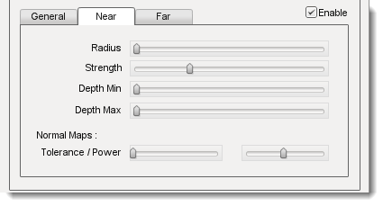 |
SSAO parameters for pixels near to the camera (small depth values).
- Radius
- Occlusion radius.
- Strength
- Occlusion intensity/darkness.
- Depth min
- Minimum screen depth at which to apply effect.
- Depth max
- Maximum screen depth at which to apply effect.
- Tolerance
- Unused
- Power
- Unused
|
| 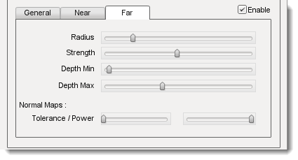 |
SSAO parameters for pixels far away from the camera (large depth values).
- Radius
- Occlusion radius.
- Strength
- Occlusion intensity/darkness.
- Depth min
- Minimum screen depth at which to apply effect.
- Depth max
- Maximum screen depth at which to apply effect.
- Tolerance
- Unused
- Power
- Unused
|
| 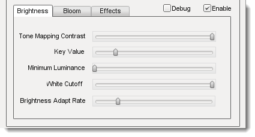 |
Control several High Dynamic Range (HDR) effects including Bloom and Tone mapping.
- Tone Mapping Contrast
- Amount of interpolation between the scene and the tone mapped scene.
- Key Value
- The tone mapping middle grey or exposure value used to adjust the overall "balance" of the image.
- Minimum Luminence
- The minimum luninace value to allow when tone mapping the scene. Is particularly useful if your scene very dark or has a black ambient color in places.
- White Cutoff
- The lowest luminance value which is mapped to white. This is usually set to the highest visible luminance in your scene. By setting this to smaller values you get a contrast enhancement.
- Brightness Adapt Rate
- The rate of adaptation from the previous and new average scene luminance.
|
|
- Bright Pass Threshold
- The threshold luminace value for pixels which are considered "bright" and need to be bloomed.
- Blur multiplier/mean/Std Dev
- These control the gaussian blur of the bright pass for the bloom effect.
|
|
- Enable color shift
- Enables a scene tinting/blue shift based on the selected color, for a cinematic desaturated night effect.
|
|
This effect creates radial light scattering (also known as god rays). It works best when the scene contains a very bright light, but even in the example above you should be able to see some scattering occuring around the crystal.
- Brightness
- Intensity of the light ray effect.
|
|
Depth of Field (DOF) simulates a camera lens, and blurs pixels based on depth from the focal point. DOF is commonly used when zooming in with a weapon.
In the screenshot, note how the distant glowing crystal is blurred, but the nearby gears are still sharp.
- Enable DOF
- Enable/disable the DOF effect.
- Enable Auto Focus
- Determines how the focal depth is calculated. When auto-focus is disabled, focal depth is set manually by calling DOFPostEffect::setFocalDist. When auto-focus is enabled, focal depth is calculated automatically by performing a raycast at the screen-center.
|
|
- Near/Far Blur Max
- Sets maximum blur for pixels closer/further than the focal distance.
- Focus Range (Min/Max)
- The min and max range parameters control how much area around the focal distance is completely in focus.
- Blur Curve Near/Far
- Controls the gradient of the near/far blurring curve. A small number causes bluriness to increase gradually at distances closer/further than the focal distance. A large number causes bluriness to increase quickly.
|
|
This effect is currently unavailable. |
|
This effect is currently unavailable. |
|
This effect is currently unavailable. |
|
PostFX settings can be saved to file and and loaded automatically with the level. To achieve this, simply save the settings with the same name as the level file. For example, for Burg.mis, save the PostFX settings in a file called Burg.postfxpreset.cs in the same folder as the level file. |
Manipulators
The last World Editor visual we will describe is the gizmo. A gizmo is a three dimensional rendering of an object's transforms. While using the Object Editor tool, you can use a gizmo to adjust an object's location, rotation, and scale without having to manually input number values in the Inspector Panel.
Each gizmo has a unique appearance to notify you of what you are adjusting based upon the tool that you are using.
Move Tool Gizmo
When you wish to move an object from one place to another, you will use the Move Tool. This is represented by a gizmo with arrows pointing toward different axes.
You can grab an arrow to move the object along an axis, or grab a space between two arrows to move it in both directions.
If you look carefully, you should see letters at the end of each arrow. These correspond to Torque 3D's world coordinate system. The engine utilizes the right-handed (or positive) Cartesian coordinate system, where Z is up (top), X is side (right), and Y is front (forward). This applies to the rest of the gizmos.
Scaling Tool Gizmo
The Scaling Tool is represented by a gizmo that looks similar to the Translate gizmo. Instead of arrows, there are blocks at the end of the gizmo lines. Dragging one of the boxes in a direction will shrink or grow your object, depending on which direction you move.
Rotation Tool Gizmo
While using the Rotation Tool, the orientation gizmo will be rendered. This gizmo looks and acts much differently than the previous two. Instead of straight lines, multiple circles will surround your object.
Dragging the red circle in a direction will rotate the object along the X-Axis. Green rotates around the Y-Axis. Blue rotates around the Z-axis. The off color circles allow you to rotate an object along multiple axes.
Conclusion
The purpose of this article is to walk you through the World Editor's interface. The terms learned will be used throughout the rest of the documentation. More details will be explained in the documentation for each individual tool.
|